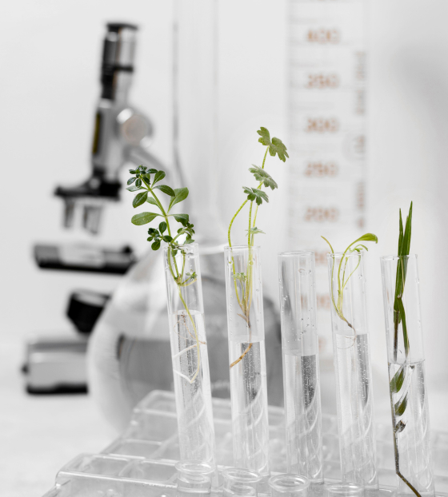
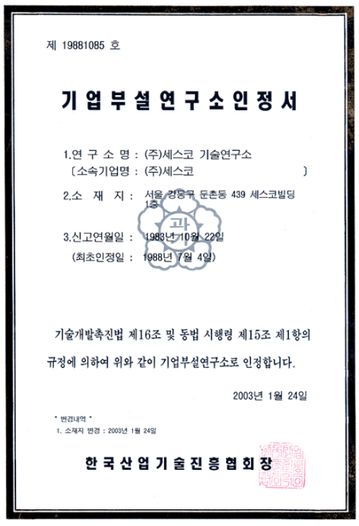
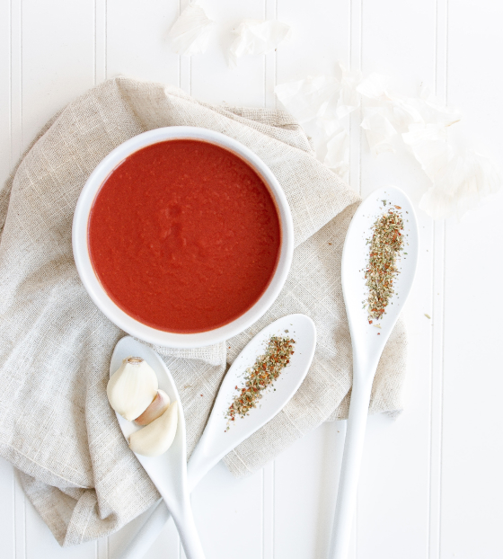

home > 기업경쟁력 > 세스코 경쟁력
세스코 경쟁력
깨끗하고 안전한 위생환경에 대한 토털 안전솔루션을 제공해드립니다.
41년간 업계의 리더 세스코
현장의 노하우와 첨단 기술력을 가지고 3,500명에 이르는
토털 위생전문가가 해충 뿐만 아니라 바이러스로부터 안전한 생활환경을 만들어드립니다.
- 세스코 R&D 시스템
- 세계 최대 규모 위생해충기술연구소 보유하고 있으며, 5,016만 해충 인프라 및 세스코 식품안전연구소 3,957여가지 식품안전관리 시스템 구축 및 관리합니다.
- 통합커뮤니케이션 센터
- 서버를 통한 전국 40만 고객의 위생서비스 이력 빅데이터 관리하고, 위생 정보 빅데이터를 통한 해충위생, 식품안전, 공기질 분석 및 최적의 솔루션 도출합니다.
- 환경위생 컨설턴트
- 매년 생물학·화학·IT공학 분야 전문성 습득을을 위한 의무교육 시스템으로 엄격한 이론/현장 실습과정을 통해 전문가 자격을 취득하는 CESCO FSL을 운영합니다.
- 시험분석센터 보유
- HACCP 위해요소분석, 환경 모니터링, 식품시료 영양분석 등 식품 제조 및 조리공정 관련 다양한 분석 서비스 제공 및 품질 보증 시스템으로 운영됩니다.
- 세스코 멤버스 브랜드 파워
- 요기요 등에 멤버스 마크 노출로 70% 이상 주문량 상승 효과를 보였으며 멤버스 가입만으로도, 네이버(일 방문객 3,400만 명)에 멤버스마크 자동 노출 홍보가됩니다.
- 식품안전 교육센터 보유
- 식품 취급 현장을 재현한 시설에서 HACCP, GMP, SSOP(선행요건)기준에 부합하는 실습교육을 통해 시설, 설비에 대한 기준 및 절차 제시합니다.
글로벌 NO.1 생활환경 위생기업
40년간 업계 리더로서 지켜온 대한민국 환경위생의 역사 세스코입니다.
- PROFESSIONALISM
- 대한민국 방제산업의 기원으로
출발하여첨단환경위생기업으로 도약
- SERVICE
- 지역본부 100개 직영 지사의
촘촘하고 균일한 서비스 네트워크
- SOLUTION
- 세계 최고 기술의 IPM 기술연구소
200여 명의 석·박사 맞춤방제 솔루션
- SATISFACTION
- 서비스 추천· 유지 의향 97%
기관, 가정집 등 전국 40만 멤버스 고객
위생해충기술연구소
CESCO SCIENCE
CESO R&D CENTER 위생해충 기술연구소
- 세스코 위생해충 기술연구소
- 세계 최대 규모의 해충 기술연구소로 2,193가지 해충 방제시스템 보유
- 이물분석 센터
- 국내 유일의 제품 혼입이물 분석기관으로, 제품 내 혼입된 이물의 실체 파악
- CBT 센터
- 세계 최대규모의 BIOTECH 약제생산 시스템으로 안전한 친환경제 사용

- 세계최대규모
- 세계 최고 수준의 연구개발 시스템
위생해충 기술연구소 - 위생해충 기술연구소는 과학기술부에서 인증 받은 세계 최대 규모의 해충연구소로, 총 3600여명의 연구원들이 쾌적한 생활환경을 위한 토털위생솔루션 기술개발에 전역을 다하고 있습니다.
- 저희 연구소는 주요 5개분야인 해충연구, 미생물연구, 약제연구 장비 및 시스템 기기연구, 위생시스템 연구에서 현재 약 100건의 특허를 보유하고 있습니다.

닫기
- KOLAS
- 인증국제적 공신력을 갖춘 인증으로
믿음직한 서비스 - KOLAS(KOREA LABORATORY ACCREDIATION SCHEME)은 국제적으로 안정된 평가 기준으로 인정받은 시험기관이 발급한 시험 성적서가 국제적인 공신력을 갖추고 있을을 인정하는 제도입니다.
- 세스코 기술연구소는 KOLAS인증을 통해 국제적으로 안정된 시험품질 경영 시스템을 보유하고 있는 것으로 입증되었으며, 이를 통해 정확한 시험분석 결과를 제공받을 수 있습니다.
식품안전연구소
CESCO SCIENCE
CESO R&D CENTER 식품안전연구소
- 식품안전연구소
- 식품위해요소 1,000여가지 3,597여가지 식품안전 관리 기준 보유
- 시험분석센터
- 16종의 식품 미생물 분석 · 동정 환경 모티터링 검사 및 이력 관리

- 서비스경쟁력
- 고객의 위생 안심을 책임지는
식품안전연구소 - 식품안전연구소는 식품안전연구, 미생물연구, 위생시스템 연구, 장비 및 시스템 기기 연구 등 다양한 연구를 진행하고 있으며, 위생해충기술연구소와의 공통분야 연구를 통한 고객 안심 생활 솔루션을 개발하고 있습니다.
- 또한, 전국 80개 직영지사 300면의 식품안전전문가 보유로 철저하게 전국 위생이슈 모니터링을 하고 있으며, 전원 350시간 이상의 전문교육 수료 및 NRA Servsafe 자격증을 취득했습니다.
- 식품안전전문가
- 식품안전 전문가의 객관적인 진단과
점검으로 식품안전 약속 - 믿을 수 있는 식품안전을 약속하는 토텅 식품안전 전문가는 세스코 식품안전 컨설턴트(FOOD SAFETY CONSULTANT), 식품안전전문디렉터(FOOD SAFETY DIRECTOR)로 분류되어 있습니다.
- 세스코에서는 체계적인 교육과 기술 등급관리를 통해 식품안전연구소에서 개발되는 최신의 토탈 식품 안전시스템을 정기교육하여 업종별, 고객별 1:1 맞춤 식품안전 서비스를 제공합니다.